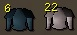

lolwut's Web Site
The Internet is Serious Business!
Home > Video Games > PC > RuneScape > Early Memories of RuneScape
Early Memories of RuneScape
I started playing RuneScape around October 2004, and the game was very different back then. I cannot believe that it's now been over 16 years since I first logged on; today there are teenagers playing what is now known as RuneScape 3 who were born after I discovered the game!
What follows are small things here and there that I remember about my early days (which I will define as late 2004 and early 2005) on RuneScape. Some are personal experiences I had, while others are things I can remember about the state of the game back then. I hope this information might be of some interest to you.
- The Slayer skill, despite my belief that it had been added into the game before I started playing, was actually added on 26 January 2005. I recall for a time in early 2005 that I checked the Hiscores and saw that Zezima had not yet achieved 99 Slayer.
- When my combat level was very low and my knowledge of the game very limited, I was once auto-attacked by the level 5 highwayman between Draynor Manor and Draynor Village. Because his 3D model was that of a human, and because the yellow text
Stand and deliver!
appeared above his head when he attacked me, I thought that he had talked
, and was thus another player attacking me. After running away, I opened my ignore list and added Highwayman to it.
- Some of the graphics for items were different, as you can see in the table below:
| Item |
Old Graphic |
New Graphic |
| Logs (various) |
|
|
| Runes (various) |
|
|
| Bucket |
|
|
| Tinderbox |
I could not find an old graphic, but I recall that it was whiter and had sharper corners than the new graphic. |
|
| Platebodies (various) |
|
 |
- I recall that at one point very early on, I seriously considered quitting the game, not out of boredom, but because it seemed that I wasn't doing too well: I was very poor, knew too little of the game's mechanics to feel comfortable, and was still using the bronze short sword and wooden shield from Tutorial Island. Right around this time, when I was standing outside Varrock's west bank and wielding my bronze short sword and wooden shield, a stranger traded me and gave me an iron short sword and bronze square shield for free (he probably figured that I was struggling with the game, as my combat level was too high at the time to still be using the Tutorial Island starter equipment). Though most would hardly consider it much of an improvement in equipment, at the time I thought that I had been given a significantly better sword and shield. Believe it or not, this free equipment upgrade and that stranger's kindness motivated me to stick with the game. Had this event never occurred, it's pretty likely that I would be remembering RuneScape today as a game I played for a few weeks at the end of 2004.
- Barrows had not yet been released, which meant that dragon armor was the melee endgame.
- It was rare to see anybody with combat level 100 or above, and if you saw someone with combat level 120 or above, it was almost guaranteed that they were famous or semi-famous in the game. The main equipment of the 120+ (and even 110+) crowd during this time consisted of the dragon med helm, dragon chainbody, dragon platelegs, dragon square shield or the crystal shield, and generally either a dragon scimitar or dragon battleaxe. They liked to wear the Cape of Legends; this was before the days of the Fire Cape.
- During one of the first few times I logged in, my friend who had introduced me to RuneScape wanted to meet up with me in-game for the first time. He private messaged me and asked me where I was. At the time, I was standing on the bridge near Lumbridge, over the River Lum, directly south of the goblin area; of course, back then I didn't know this, so I opened up the world map and probably spent a good minute or two trying to find what I saw in my mini-map on the world map. When I finally found the spot, I started to carefully compose my response to him:
I'm at Lumbridge.
, at a painfully low WPM but with every effort expended for proper capitalization and punctuation. When I finally sent him the private message, I saw that he had sent me a handful of private messages in the meantime asking if I was still there. I will never forget that last desperate private message he sent to me before I replied: lolwut! lolwut! Talk!!!!!!!
(but with lolwut replaced with my first name).
- I didn't have a membership subscription for a while after I started playing, so during that time in F2P, I always feared the dreaded phrase:
Members Only
.
- Blue partyhats were something like 100M at the time. (Maybe—I am really unsure. Take this number with a grain of salt.)
- My friend who had introduced me to the game actually went through the trouble of making my character for me and leveling it a bit before handing it off to me so I could have a head start in the game. Very soon after I started using that account, he thought that it would be fun for the two of us to experience Tutorial Island together. I can remember that evening very clearly: over the phone, we coordinated creating new accounts, selecting the same world, and logging on at the same time so we could see each other in-game on Tutorial Island. We then went through and finished the tutorial, talking and joking over the phone the whole time. While my friend would quickly abandon his new account, I actually stuck with mine, as it had a username and appearance that I liked better than the one my friend had made for me. This new account would soon become my main account.


 All written materials on this Web site are my own, and all are released under the Do What the Fuck You Want to Public License Version 2.
All written materials on this Web site are my own, and all are released under the Do What the Fuck You Want to Public License Version 2.
This page last modified on 29 March 2021.